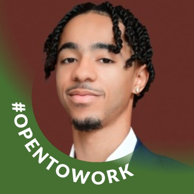

Djibril Hamilton
Data & Intelligence ArtificielleData & Artificial Intelligence
Étudiant en double diplôme Centrale Nantes & Audencia (Big Data, Management et IA). J'automatise des processus avec Python et n8n, et je construis des agents IA. Je recherche un stage ou une alternance en Data / IA. Dual-degree student at Centrale Nantes & Audencia (Big Data, Management and AI). I automate processes with Python and n8n and build AI agents. I'm looking for an internship or work-study position in Data / AI.

ParcoursBackground
Mes expériences et ma formation, de Nantes à Shenzhen en passant par Casablanca.My experience and education, from Nantes to Shenzhen via Casablanca.
L2C Technologies
- Développement et automatisation de processus avec Python, n8n et différentes API ; création d'agents IA pour automatiser des tâches répétitives.
- Création et administration de boutiques Shopify, optimisation SEO, gestion produits, modifications WordPress/Webflow.
- Built and automated processes with Python, n8n and various APIs; created AI agents to automate repetitive tasks.
- Created and managed Shopify stores, SEO optimization, product management, WordPress/Webflow edits.
Absolis Sud Intérim
- Missions courtes en logistique, production et travaux saisonniers : adaptabilité, fiabilité, sens du travail.
- Short assignments in logistics, production and seasonal work: adaptability, reliability, strong work ethic.
FC Nantes
- Service client, encaissement et gestion des flux à forte affluence lors des matchs.
- Anticipation des besoins en équipe, ouverture et fermeture de la buvette.
- Customer service, cash handling and crowd flow management on match days.
- Anticipating needs as a team, opening and closing the stand.
Keller Williams Realty
- Préparation des maisons, visites guidées, réponses aux clients : contribution à la vente de 4 maisons (environ 675 000 $ de bénéfice).
- Support logistique pour les nouveaux propriétaires.
- Prepared homes, led tours, answered client questions: contributed to the sale of 4 homes (about $675,000 in profit).
- Logistics support for new homeowners.
Centrale Nantes & Audencia
- Systèmes d'information, Cloud computing, Visualisation scientifique, NLP, Informatique quantique.
- Python, Business Intelligence (Power BI, Excel), bases de données SQL.
- Information systems, Cloud computing, Scientific visualization, NLP, Quantum computing.
- Python, Business Intelligence (Power BI, Excel), SQL databases.
Shenzhen University
- FinTech, IoT, Blockchain & Business Analytics, étude des marchés chinois.
- FinTech, IoT, Blockchain & Business Analytics, Chinese market studies.
Centrale Casablanca
- Machine et Deep Learning, analyse de données, sécurité des systèmes d'information.
- Machine and Deep Learning, data analysis, information systems security.
Lycée Les Bourdonnières
- Numérique et Sciences Informatiques, Mathématiques, section européenne allemand.
- Computer Science, Mathematics, European German section.
ProjetsProjects
Projets data, IA et automatisation. Clique sur un projet pour voir le détail.Data, AI and automation projects. Click a project to see the details.
Prédicteur Coupe du Monde 2026World Cup 2026 predictor
Moteur de prédiction qui simule le tournoi complet 50 000 fois. Il combine un modèle de Poisson Dixon-Coles, les ratings ELO, la qualité des effectifs (EA FC 26) et l'impact des blessures. Backtesté sur la Coupe du Monde 2022 : environ 60 % de précision sur les résultats et un score de Brier de 0,52 (0,67 pour le hasard). L'interface permet de simuler n'importe quel match et de voir la probabilité de chaque score.
Prediction engine that simulates the whole tournament 50,000 times. It combines a Dixon-Coles Poisson model, ELO ratings, squad quality (EA FC 26) and injury impact. Backtested on the 2022 World Cup: about 60% accuracy on match results and a Brier score of 0.52 (0.67 for random guessing). The interface lets you simulate any match and see the probability of each scoreline.
ChurnGuard
Prédit quels clients vont partir, explique pourquoi et chiffre l'impact financier. Entraîné sur le dataset IBM Telco (7 032 clients, 21 variables). XGBoost retenu pour son meilleur ROC-AUC (0,856). Dashboard Streamlit en 4 pages : vue d'ensemble, clients à risque, impact business et explication SHAP par client. Environ 1,3 M$ de revenu annuel à risque identifié.
Predicts which customers will leave, explains why and quantifies the financial impact. Trained on the IBM Telco dataset (7,032 customers, 21 features). XGBoost chosen for the best ROC-AUC (0.856). 4-page Streamlit dashboard: overview, at-risk customers, business impact and per-customer SHAP explanation. About $1.3M of annual revenue at risk identified.
Agent IA planning sur TelegramTelegram AI planning agent
Agent basé sur Claude, connecté à Telegram. Il comprend mes messages vocaux et écrits, gère mon planning comme un calendrier intelligent, optimise mon temps et m'envoie des rappels pour ne manquer aucun événement.
Claude-based agent connected to Telegram. It understands my voice and text messages, manages my schedule like a smart calendar, optimizes my time and sends reminders so I never miss an event.
Newsletter tech personnaliséePersonalised tech newsletter
Newsletter sur l'actualité tech, générée automatiquement avec n8n et Claude et adaptée à mes centres d'intérêt.
Tech news newsletter generated automatically with n8n and Claude, tailored to my interests.
CompétencesSkills
Les outils et domaines que je maîtrise le mieux.The tools and fields I know best.
Data & IA
Automatisation & WebAutomation & Web
Business & FinanceBusiness & Finance
LanguesLanguages
DiscutonsLet's talk
Je recherche un stage ou une alternance en Data / IA. Écris-moi, je réponds rapidement.I'm looking for a Data / AI internship or work-study. Write to me, I reply quickly.